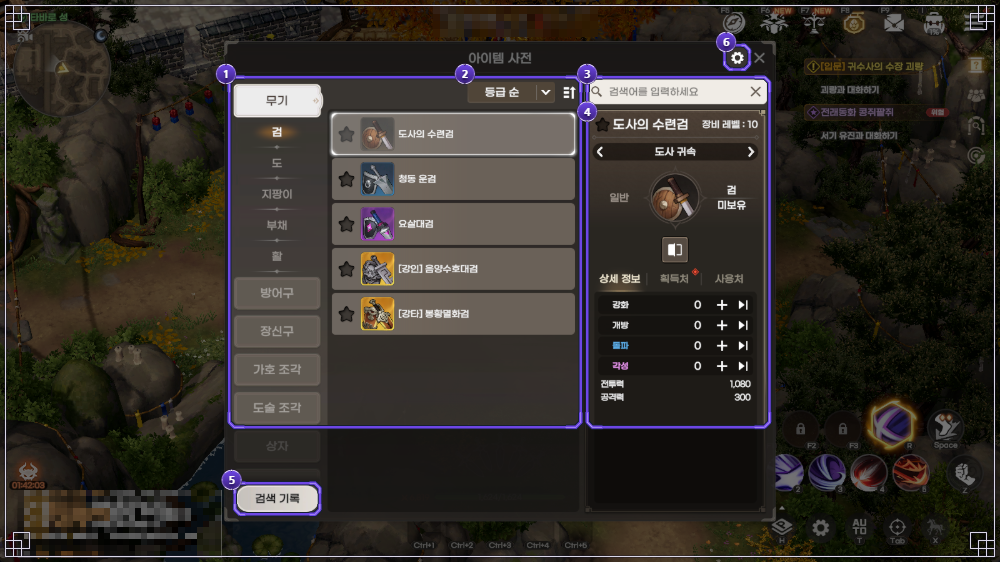
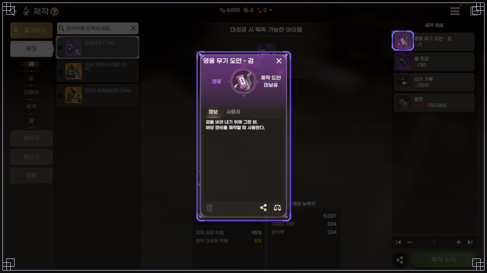
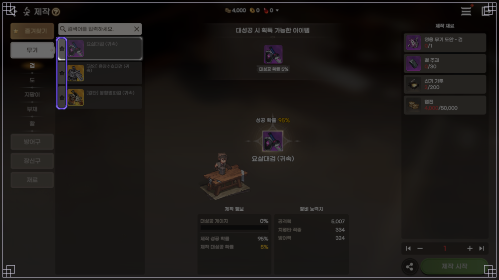
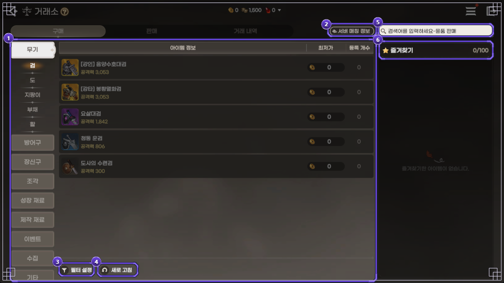
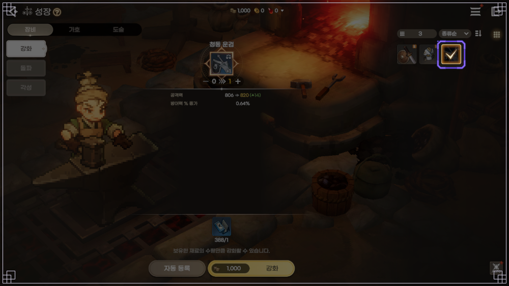
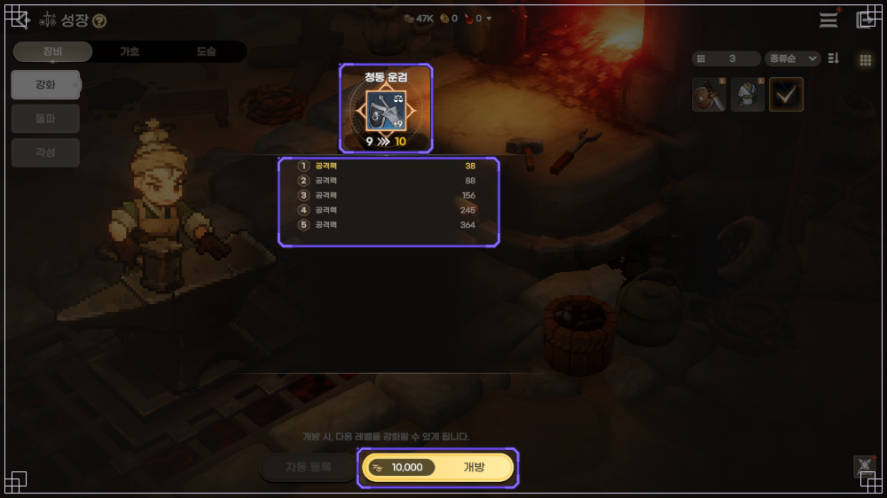
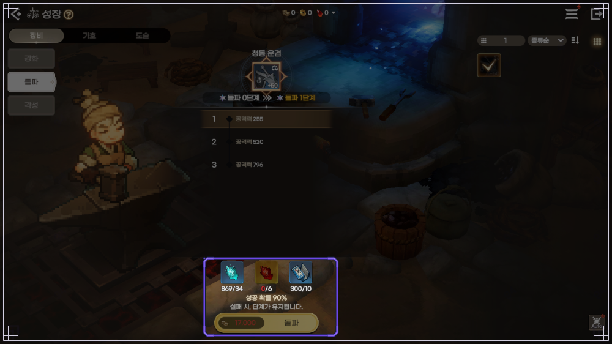
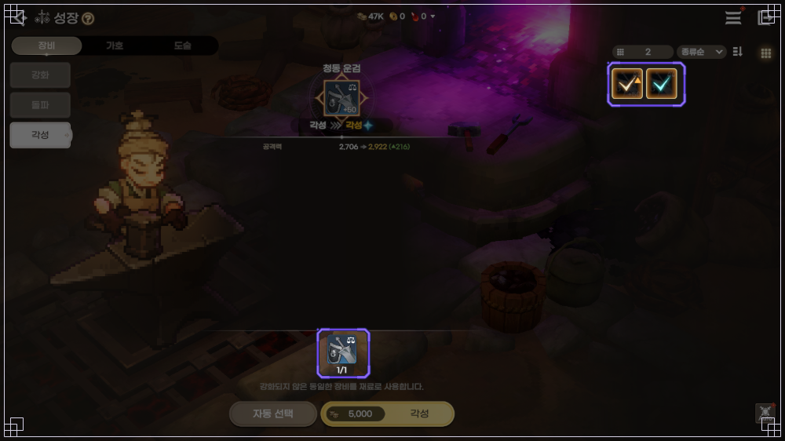

도깨비의세계 무기 추천, 무기 5종 고르는 기준과 장비 강화 개방 돌파 각성 순서
도깨비의세계는 정해진 직업이 없는 게임이라, 접속하자마자 무기부터 뭘 들어야 하나 고민이 되는데요. 결론부터 말씀드리면 공식 가이드는 무기를 검·도·지팡이·부채·활 5종류로만 적어 두고 종류별로 우열을 따로 매기지 않았어요. 그래서 이 글에서는 순위를 만드는 대신 무기를 고르는 기준과 구하는 길, 그리고 장비를 강화 → 개방 → 돌파로 키우는 길과 각성까지 한 번에 묶었어요. 기준일은 2026년 10월 10일이고, 이벤트는 기간 안에 접속해야 받을 수 있어요.
도깨비의세계 무기 5종, 뭘 기준으로 고르면 되나요?
무기는 검·도·지팡이·부채·활 5종이고, 공식 글에 종류별 우열 설명이 없어서 쓸 도술 스타일과 등급, 구하기 쉬운 길을 기준으로 고르시면 돼요.

아이템 사전의 '무기' 탭에 다섯 종류가 하위 탭으로 나란히 있어요
이미지 출처: 도깨비의세계 공식 포럼 가이드 7907(아이템 사전)
- 쓸 도술 스타일 전설 무기는 이름 앞에 [강인]·[강타]처럼 도술 스타일 이름이 붙어요. 공식 확률 표(확률 9257)의 태초단에 전설 무기 12종이 [강인]·[강타]·[연타]처럼 스타일 이름을 달고 나와요. 다만 종류가 공식 화면에서 확인되는 건 [강인] 음양수호대검·[강타] 봉황멸화검 두 검뿐이고(가이드 7907), 나머지 열 종이 어떤 무기인지는 공식 글에 구분이 없어요
- 등급 일반 < 희귀 < 영웅 < 전설 순서로 올라가요
- 구하기 쉬운 길 당장 손에 들어오는 무기부터 써 보는 쪽이 현실적이에요
종류별 차이는 공식 글에 없어서 팬 데이터베이스 깨비지지 기준(2026-10-10 조회)으로만 말씀드리면, 같은 등급일 때 5종의 공격력은 같고 달라지는 건 부가 능력치 구성이에요. 희귀·영웅 기준으로 검·도는 치명타 적중과 방어력, 활은 공격 정확도·체력·방어력이 붙는 식이죠. 전설 무기는 한 종류 안에서도 스타일이 여러 개로 갈려서 지팡이라고 원거리 하나로 묶이지도 않아요. 다른 종류의 능력치 값은 공식 가이드 화면에서 확인한 게 없으니 참고용으로만 봐 주세요. (깨비지지 아이템 도감)
도깨비의세계 무기 구하는 법, 제작이랑 선택 상자 거래소 뭐가 있나요?
능력치 무기는 공식 글에서 확인한 길만 해도 쇠복이 제작, 선택 상자, 단 봉인해제, 거래소, 문파·상인회 상점이 있어요.
- 제작 메뉴 ▶ 제작에서 무기 도안과 재료를 갖추고 제작해요. 제작을 맡은 NPC는 타바로 성 대장장이 쇠복이예요 (팁 8072). 서사 임무 '[첫걸음] 제작 장인의 망치 4'를 끝내면 열려요 (가이드 7911)
- 선택 상자 오픈 기념 '몽련이 드리는 특별 선물'로 희귀 무기 선택 상자와 희귀 방어구 선택 상자가 1개씩 우편함에 와요. 10월 8일 18:40부터 10월 21일 08:00까지 접속해야 받아요 (이벤트 10676). 라이브 방송 감사 쿠폰 3 '도깨비의마음'에도 희귀 무기 선택 상자가 1개 들어 있어요 (공지 12167)
- 단 봉인해제 입문 임무 '[길잡이] 단 봉인해제'를 끝내면 열려요. 천지단은 영웅 무기 도안 5종이 각 1.9065%, 조화단은 전설 무기 도안 5종이 각 3.9997%, 영기단은 희귀 무기 5종이 각 1.8182%, 태초단은 전설 무기 12종을 도안이 아닌 완성품으로 각 1.375%예요 (확률 9257 · 가이드 7838)
- 거래소 서사 임무 '[첫걸음] 거래소의 새 단골 7'을 끝내면 열리고, '무기' 탭에서 다섯 종류를 따로 볼 수 있어요 (가이드 7862)
- 문파 상점·상인회 문파 상점에서 영웅·전설 무기 도안 선택 상자를 팔아요 (팁 8076). 타바로 성 상인회의 미누(전래동화 상점)는 전설 무기 도안 선택 상자를 팔고 (가이드 7988), 콩쥐 팥쥐 이벤트(~12월 10일 08:00) 기간엔 별의 조각으로 월간 1회 교환할 수 있어요 (이벤트 9226)
제작은 도안이 있어야 만들 수 있어요. 도안은 검·도·지팡이·부채·활별로 영웅과 전설이 따로 있는데, 전설 도안에서 어느 스타일의 무기가 나오는지는 공식 글에 설명이 없어요.

'영웅 무기 도안 - 검' 팝업이에요, 이 도안이 있어야 제작 목록에서 만들 수 있어요
이미지 출처: 도깨비의세계 공식 포럼 가이드 7911(제작)

도안을 갖추면 제작 화면의 '무기' 탭에서 만들어요, 검 목록이에요. 화면 속 수치는 테스트 환경 값이라 출시 값과 다를 수 있어요
이미지 출처: 도깨비의세계 공식 포럼 가이드 7911(제작)
거래소는 다른 도사가 내놓은 무기를 사는 길이에요. 판매 등록엔 보증금이 필요하고 취소해도 돌려받지 못해요.

거래소 '무기' 탭도 아이템 사전처럼 종류별 하위 탭으로 나뉘어 있어요
이미지 출처: 도깨비의세계 공식 포럼 가이드 7862(거래소)
참고로 훈민증표 수집 이벤트(이벤트 9243)에서 받는 한글 무기는 외형이에요. 능력치가 있는 무기가 아니라서 위 길들과는 따로 봐야 하고, 10월 21일 08:00에 끝나요.
도깨비의세계 장비 강화 순서, 강화 개방 돌파 각성은 어떻게 이어지나요?
장비는 강화(+50까지) → 개방(10레벨마다) → 돌파(+50 이후) 순서로 이어지고, 각성은 강화 안 한 같은 장비가 생기면 따로 하는 단계예요.
장비는 무기 5종, 방어구 6종(투구·갑옷·신발·각반·장갑·허리띠), 장신구 4종(목걸이·반지·팔찌·귀걸이)이고 등급은 무기랑 똑같이 일반에서 전설까지 네 단계예요.
| 단계 | 하는 일 | 필요한 것 | 조건 | 실패하면 |
|---|---|---|---|---|
| ① 강화 | +1에서 +50까지 올려요 | 같은 등급 장비 강화 비법서와 엽전 | 모든 장비 +50까지 | 가이드엔 서술이 없어요. 출시 전 Q&A(공지 1132)는 실패는 있어도 하락·파괴는 없다고 답했어요 |
| ② 개방 | 막힌 레벨을 열어요 | 엽전 등 (팁 8108) | 9→10·19→20·29→30·39→40·49→50 | 가이드엔 서술이 없어요. 출시 전 Q&A(공지 1132) 기준으로 ①과 같아요 |
| ③ 돌파 | 단계를 올려요 | 재료와 엽전 | +50 강화 후, 최대 일반 1·희귀 3·영웅 5·전설 10단계 | 단계 유지, 재료만 소모 |
| ④ 각성 | 능력치를 올려요, ✦ 표시 | 강화 안 한 같은 장비와 엽전 | 등급별로 횟수가 달라요(✦ 최대 5개) | 가이드엔 서술이 없어요. 출시 전 Q&A(공지 1132) 기준으로 ①과 같아요 |
각성은 돌파 다음에 꼭 거치는 단계로 안내돼 있지 않아요. 강화 안 한 같은 장비가 있으면 하는 단계이고, 선행 조건은 가이드에 안내가 없어요. 개방은 공식 글(팁 8108)에 엽전 등이 적혀 있고, 강화·돌파·각성도 성장 화면 그림 하단에 엽전 아이콘 비용이 표시돼요. 그림 속 수치는 테스트 환경 값이라 숫자는 적지 않았어요.
강화 재료는 장비와 같은 등급의 '장비 강화 비법서'라서 희귀 장비엔 희귀 비법서만 들어가요. [자동 등록]을 누르면 개방 직전 레벨까지 알아서 골라 주고, 비법서가 모자라면 가진 만큼만 올려 줘요. 도술은 '도술 강화 요령서'를 따로 쓰고 스타일 단위로 같이 오르니까 이 글에서는 장비만 다룰게요.

성장 메뉴의 장비 '강화' 화면이에요
이미지 출처: 도깨비의세계 공식 포럼 가이드 7739(성장)
개방은 10레벨마다 한 번씩 거치는 관문이에요. 9에서 10, 19에서 20처럼 올릴 때 필요해서 +50까지 총 5번이고, 개방 화면에서 오르는 능력치를 미리 볼 수 있어요.

9→10 개방 화면이에요, 오르는 능력치가 줄지어 보여요
이미지 출처: 도깨비의세계 공식 포럼 가이드 7739(성장)
도깨비의세계 돌파 확률, 실패하면 단계가 깎이나요?
돌파에 실패해도 단계는 내려가지 않고, 쓴 재료만 사라진 채 지금 단계가 그대로 유지돼요.

돌파 화면 하단에 '실패 시, 단계가 유지됩니다'라고 떠요. 화면 속 확률은 테스트 환경 값이라 아래 표를 기준으로 보세요
이미지 출처: 도깨비의세계 공식 포럼 가이드 7739(성장)
아래 표는 공식 확률 안내 '돌파 - 장비, 가호, 도술'(9300)의 장비 표를 한 장으로 옮긴 거예요. 숫자는 모두 성공 확률이고, 칸에 -가 있으면 그 등급엔 없는 단계예요.
| 돌파 단계 | 일반 | 희귀 | 영웅 | 전설 |
|---|---|---|---|---|
| 0→1 | 100% | 100% | 90% | 90% |
| 1→2 | - | 90% | 80% | 80% |
| 2→3 | - | 80% | 70% | 70% |
| 3→4 | - | - | 55% | 55% |
| 4→5 | - | - | 40% | 40% |
| 5→6 | - | - | - | 25% |
| 6→7 | - | - | - | 10% |
| 7→8 | - | - | - | 5% |
| 8→9 | - | - | - | 5% |
| 9→10 | - | - | - | 5% |
전설은 7→8단계부터 5%라서 재료를 꽤 쓰는 구간이에요. 가호와 도술은 표가 따로 있고 값이 달라서 같은 표로 읽으시면 안 되니 주의해 주세요.
도깨비의세계 장비 각성은 뭘 재료로 쓰고, 초반엔 뭐가 헷갈리나요?
각성은 강화하지 않은 같은 장비를 재료로 써서 능력치를 올리는 단계라서, 재료로 둘 장비엔 강화 비법서를 쓰지 않고 그대로 두셔야 해요.

각성 화면 하단에 '강화되지 않은 동일한 장비를 재료로 사용합니다'라고 적혀 있어요
이미지 출처: 도깨비의세계 공식 포럼 가이드 7739(성장)
- 희귀 장비에 재료를 얼마나 쓸지 공식 권장이 없어요. 상위 등급 장비를 곧 구할 수 있는지 먼저 보고, 그 전까지는 희귀 장비에 비법서를 한꺼번에 몰아 쓰지 않는 쪽이 안전하다고 봐요
- 갈아탈 때 강화가 이어지는지 상위 등급으로 바꿀 때 강화·돌파·각성이 넘어가는지는 가이드에 안내가 없어요
- 강화 창 숫자 10월 9일 기준으로, 강화 창에 등록한 장비의 강화 수치가 +1 높게 표시되는 오류가 공지돼 있어요. 실제 수치엔 영향이 없다고 해요 (공지 10859)
자주 묻는 질문
Q. 도깨비의세계 무기 추천, 어떤 걸 들어야 하나요?
공식 글에는 추천 무기나 순위가 없어서 '이게 정답'이라고 말씀드리긴 어려워요. 무기를 바꿨을 때 도술 장착이 제한되는지도 공식 안내가 없고요. 확실한 건 직업이 따로 없는 게임이라는 점이라, 선택 상자를 열어 보고 쓸 도술 스타일에 맞는 쪽으로 정하시면 돼요.
Q. 도깨비의세계 장비 강화 순서는 어떻게 되나요?
강화, 개방, 돌파로 이어지고, 각성은 강화 안 한 같은 장비가 있을 때 따로 해요. 메인 화면 ▶ 메뉴 ▶ 성장에서 열고, 입문 임무 '[길잡이] 장비 강화'를 끝내면 장비 강화·돌파·각성과 도술 강화·돌파가 함께 열려요. 도술 각성은 '[길잡이] 도술 각성', 가호 강화·돌파는 '[길잡이] 가호'로 따로 열려요 (가이드 7739). 장비·가호·도술을 해 주는 NPC는 금란이에요 (팁 8072).
Q. 도깨비의세계 돌파 실패하면 깎이나요?
깎이지 않아요. 출시 전 시연회 Q&A(공지 1132)에서도 성장 실패는 있어도 하락이나 파괴는 없다고 답했어요. 다만 그 글은 출시 전이라 지금 확률은 위 9300 표로 보시면 돼요.
도깨비의세계 무기와 장비 정리해 볼게요
무기는 정답을 찾기보다 쓸 도술 스타일에 맞춰 바꿔 가는 쪽이고, 장비는 비법서를 한곳에 몰기 전에 개방 횟수랑 각성 재료부터 챙기는 게 순서예요. 선택 상자와 훈민증표는 10월 21일 08:00에 끝나니까 일단 받아 두시는 걸 추천드려요~
✔ 도깨비의세계 같이 보기 좋은 내용
· 도깨비의세계 필드보스 시간 요일별 일정표, 신기 쟁탈전 미혹의 정원 문파전 시간까지 한 장으로
· 도깨비의세계 보물상자 위치 정리, 지역 19곳 상자 91개 미니맵 번호 핀과 상자별 보상
· 도깨비의세계 쿠폰 4종 정리, 코드 입력하는 법과 마감일 한눈에
참고한 곳
· 도깨비의세계 공식 포럼 — 성장 가이드
· 도깨비의세계 공식 포럼 — 캐릭터 성장 콘텐츠 팁
· 도깨비의세계 공식 포럼 — 돌파 확률 정보
· 도깨비의세계 공식 포럼 — 출시 전 시연회 Q&A 공지
· 도깨비의세계 공식 포럼 — 오류 및 개선사항 통합 안내 공지
· 도깨비의세계 공식 포럼 — 단 봉인해제 확률 정보
· 도깨비의세계 공식 포럼 — 단 봉인해제 가이드
· 도깨비의세계 공식 포럼 — 제작 가이드
· 도깨비의세계 공식 포럼 — 아이템 사전 가이드
· 도깨비의세계 공식 포럼 — 거래소 가이드
· 도깨비의세계 공식 포럼 — NPC 소개 팁
· 도깨비의세계 공식 포럼 — 재화 팁
· 도깨비의세계 공식 포럼 — 상인회 가이드
· 도깨비의세계 공식 포럼 — 몽련이 드리는 특별 선물 이벤트
· 도깨비의세계 공식 포럼 — 훈민증표 수집 이벤트
· 도깨비의세계 공식 포럼 — 전래동화 콩쥐 팥쥐 이벤트
· 도깨비의세계 공식 포럼 — 라이브 방송 감사 쿠폰 공지